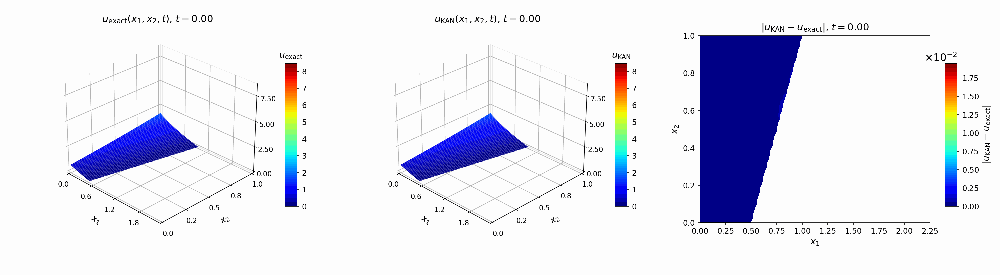
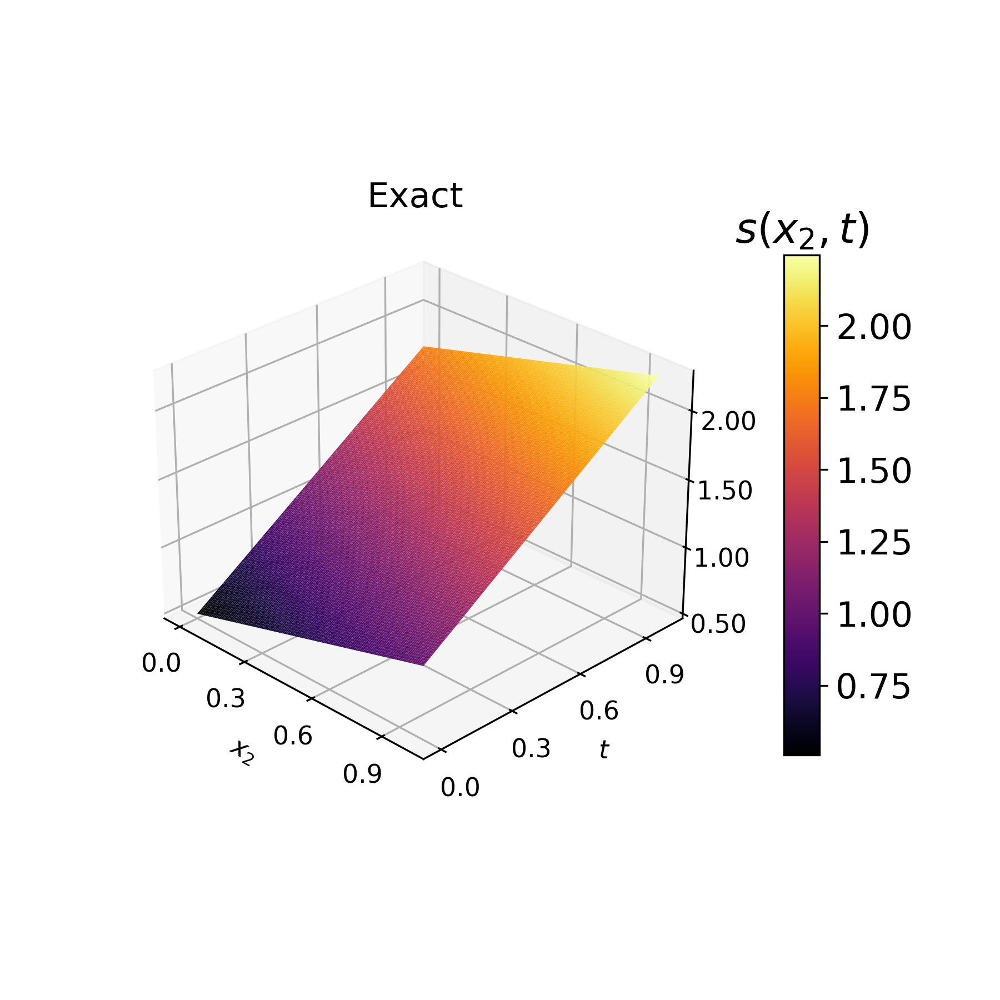
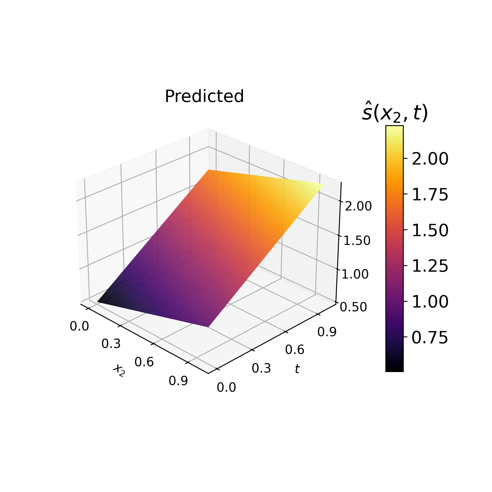
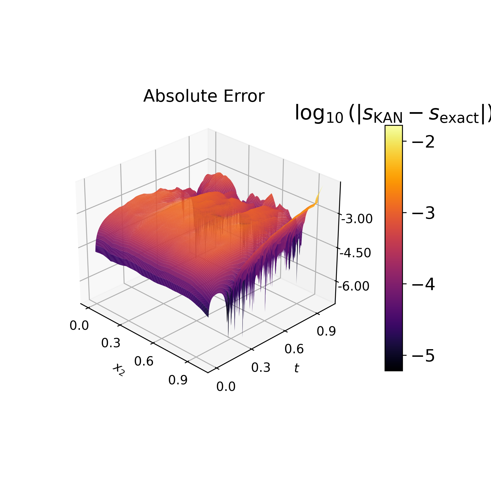

1. Kolmogorov-Arnold Solver for Free-Boundary Value Problems and Time-Dependent Stefan Problems
This project develops a KAN-based physics-informed neural solver for a moving-boundary parabolic PDE. The experiment learns both the time-dependent solution field and the moving free surface.
The main example is the two-dimensional one-phase Stefan problem. The goal is to approximate \(u(x_1,x_2,t)\) and the moving free boundary \(s(x_2,t)\).
The full computational space-time domain is
The physical moving domain is determined by the free surface:
A representative heat-equation residual for the learned solution \(u_{\mathrm{KAN}}\) is
Methodological Workflow
A compact four-stage workflow summarizes the mathematical and computational structure of the Stefan solver.
Problem Formulation
Define \(\Omega(t)\), the heat equation, boundary data, interface condition, and Stefan condition.
Model
Use \(u_{\mathrm{KAN}}(x_1,x_2,t)\) for the solution and \(\hat{s}(x_2,t)\) for the learned interface.
Training
Minimize PDE residual, initial data, boundary data, interface loss, and Stefan loss.
Approximation
Evaluate \(u_{\mathrm{KAN}}\), compute errors, and compare \(\hat{s}\) with the exact interface.
Time-Dependent KAN Prediction and Error
The animation shows the learned KAN solution evolving from initial time to final time, together with the pointwise absolute error.

Left: exact solution \(u_{\mathrm{exact}}(x_1,x_2,t)\). Middle: predicted solution \(u_{\mathrm{KAN}}(x_1,x_2,t)\). Right: pointwise error \(|u_{\mathrm{KAN}}-u_{\mathrm{exact}}|\).
The panels below compare the exact free surface \(s(x_2,t)\), the learned KAN-predicted free surface \(\hat{s}(x_2,t)\), and the logarithmic absolute error \(\log_{10}(|s_{\mathrm{KAN}}-s_{\mathrm{exact}}|)\).



Left: exact moving free surface. Middle: KAN-predicted moving free surface. Right: logarithmic absolute error \(\log_{10}(|s_{\mathrm{KAN}}-s_{\mathrm{exact}}|)\).
Training and Approximation Details
The solver is trained by minimizing residual losses associated with the PDE, boundary and initial data, and moving-boundary constraints.
A typical composite physics-informed objective has the form
Physics-Informed Loss Components
- PDE residual loss \( \mathcal{L}_{\mathrm{PDE}} \) in the moving physical domain.
- Initial-condition loss \( \mathcal{L}_{\mathrm{IC}} \) at \(t=0\).
- Boundary-condition loss \( \mathcal{L}_{\mathrm{BC}} \) on fixed boundaries.
- Interface loss \( \mathcal{L}_{\Gamma} \) on the moving free boundary.
- Stefan-condition loss \( \mathcal{L}_{\mathrm{Stefan}} \) controlling interface evolution.
Numerical Outputs
- Approximate solution \(u_{\mathrm{KAN}}(x_1,x_2,t)\).
- Pointwise error \( |u_{\mathrm{KAN}}-u_{\mathrm{exact}}| \).
- Training logs for total and component losses.
- Relative error \( \|u_{\mathrm{exact}}-u_{\mathrm{KAN}}\|_2/\|u_{\mathrm{exact}}\|_2 \).
- Predicted free surface \(\hat{s}(x_2,t)\) compared with \(s(x_2,t)\).
Summary
A compact summary of the latest project and its role in scientific machine learning for moving-boundary PDEs.
This showcase demonstrates how KAN-based and broader machine-learning methods can approximate PDEs and free-boundary value problems. The formulation combines neural approximation with physics-informed loss terms encoding the PDE, boundary data, interface constraint, and Stefan condition.
KAN Scientific Machine Learning Deep Learning Linear Elliptic PDEs Free-Boundary Problems Stefan Problem Physics-Informed Learning